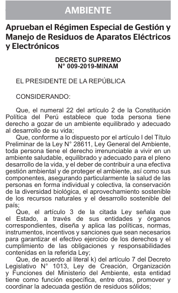

01 / RUTA RESPONSABLE⌖
01 / RUTA RESPONSABLE⌖
DISPOSICIÓN SEGURA
¿Qué hacer con un aparato que ya no usas?
Antes de desecharlo, comprueba si puede repararse o reutilizarse. Si no, identifica un punto de acopio que reciba ese tipo de equipo.
Leer guía ↗MÓDULO 04 / APRENDER PARA ACTUAR
Guías sencillas para reconocer los riesgos y elegir una ruta más responsable para tus aparatos.
LECTURAS PARA EMPEZAR
01 / RUTA RESPONSABLE⌖
DISPOSICIÓN SEGURA
Antes de desecharlo, comprueba si puede repararse o reutilizarse. Si no, identifica un punto de acopio que reciba ese tipo de equipo.
Leer guía ↗ 02 / PRECAUCIÓN⚡
02 / PRECAUCIÓN⚡
BATERÍAS Y COMPONENTES
Las baterías pueden deteriorarse, calentarse o liberar sustancias. Evita perforarlas, abrirlas o mezclarlas con residuos comunes.
Leer guía ↗
03 / MARCO NORMATIVO§D. S. N.° 009-2019-MINAM
El reglamento establece responsabilidades para productores, comercializadores y generadores en el manejo de estos residuos.
Leer resumen ↗01 / ENTREGA RESPONSABLE
Comprueba primero si todavía puede repararse o reutilizarse. Si ya no tiene otra vida útil, protege los datos personales y busca un punto de acopio que confirme que recibe ese tipo de aparato. No lo mezcles con la basura doméstica ni lo desarmes para separar piezas.
Buscar puntos de acopio ↗02 / CUIDADO DE BATERÍAS
No las abras, perfores, aplastes ni expongas al calor o al agua. Guárdalas en un lugar fresco y seco, separadas de objetos metálicos, y entrégalas en un punto que confirme que las recibe. Si una batería está hinchada o dañada, evita manipularla y consulta a un gestor autorizado.
Consultar puntos de acopio ↗03 / MARCO NORMATIVO
Establece el régimen especial para gestionar los residuos de aparatos eléctricos y electrónicos en el Perú. Define responsabilidades para productores y otros actores, así como pautas para organizar su recolección y manejo adecuado. Las obligaciones concretas dependen del rol de cada actor.
Consultar el texto oficial del D. S. 009-2019-MINAM ↗PREGUNTAS FRECUENTES
Respuestas prácticas para dar el siguiente paso con más confianza.
Son aparatos eléctricos o electrónicos que han pasado a ser residuos, incluyendo sus componentes, accesorios y consumibles cuando se descartan.
No es recomendable. Guárdala sin exponerla al calor, evita dañar sus terminales y llévala a un punto que confirme que recibe baterías.
Aprueba el régimen especial para la gestión y manejo de los RAEE en Perú, con responsabilidades diferenciadas para los actores involucrados. Consulta el texto oficial para conocer las obligaciones aplicables a cada caso.
Respalda la información que quieras conservar, cierra tus sesiones, retira la SIM y restablece el equipo a su configuración de fábrica si aún funciona.
TU APORTE TAMBIÉN SUMA
Esta cuenta de ejemplo muestra dos formas de ayudar a mantener los materiales en una ruta responsable.